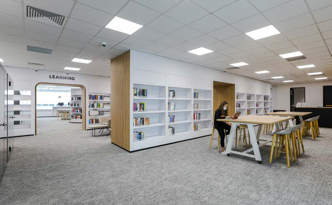

Phase 5, now in motion, looks ahead. The brief focuses on scalable infrastructure rather than shiny excess: electrical spines with room to grow; ventilation and chilled-water provisions ready for new suites; fire-life-safety coverage extended in step with space planning; and practical efficiency measures to lower operational carbon.
The point isn’t to chase trophy metrics. It’s to keep a university’s core business, learning, steady while giving it headroom to evolve.
Walk the campus and the evidence is mostly invisible. Classrooms switch from lecture to seminar to recorded tutorial without tripping breakers.
Computer labs run quietly for hours. Clinical skills suites hold temperature and airflow even when doors cycle. The BMS trend lines look boring in the best way. Maintenance teams can get to what they need to service without dismantling ceilings.

Five phases over three years did more than spread cost; it reduced risk. Each tranche carried forward site knowledge, so fewer surprises turned up in ceilings and risers. Approvals came faster because stakeholders already knew the playbook.
Lessons from the academic calendar, peaks, lulls and exam weeks, fed directly into the programme. The continuity saved time and, quietly, money.